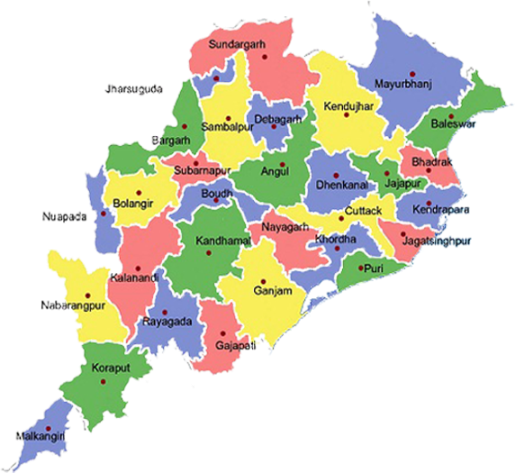

Odisha, located on the eastern coast of India, is renowned for its rich cultural heritage and natural beauty.
The state boasts a stunning coastline along the Bay of Bengal, lush forests, and picturesque temples.
Its ancient architecture is exemplified by the Jagannath Temple in Puri and the Sun Temple in Konark,
both of which are marvels of intricate design and historical significance.
Odisha is also known for its vibrant festivals, traditional dance forms like Odissi,
and its distinctive crafts, including silver filigree work and applique textiles.
With its diverse landscapes and deep-rooted traditions, Odisha offers a unique blend of history, culture, and natural splendor.
|
 |